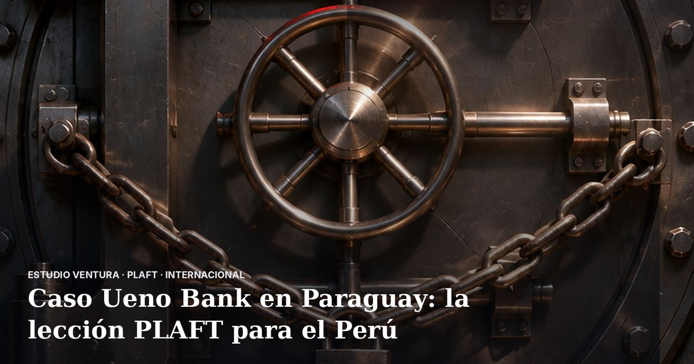

Caso Ueno Bank en Paraguay: la lección PLAFT para el Perú

La Fiscalía de Paraguay amplió el 13 de noviembre de 2026 la imputación contra el expresidente Santiago Peña y le atribuye el delito de asociación criminal en el caso Ueno Bank, según reportan varios medios. Son acusaciones fiscales, no hechos probados, y el exmandatario las niega.
01Qué pasó
Según la prensa paraguaya y Infobae, el Banco Central del Paraguay intervino Ueno Bank el 3 de noviembre por problemas de solvencia. La Fiscalía sostiene que existió una estructura dentro del Estado para favorecer a ese banco y evitar su intervención, y le atribuye a Peña un papel de jefe. Entre los hechos que menciona figuran US$200,000 en efectivo, en sobres, en la residencia presidencial. Todo esto debe ser probado ante la justicia.
02Ángulo Perú
En el Perú, el sistema de prevención del lavado de activos y del financiamiento del terrorismo (PLAFT) apunta a lo contrario: supervisión constante por parte de la SBS y reporte de operaciones sospechosas a la UIF, para que cualquier intento de frenar o debilitar la supervisión bancaria se detecte a tiempo.
03Ángulo legal (PLAFT)
Si eres sujeto obligado, revisa que tu oficial de cumplimiento tenga independencia real, con acceso a la gerencia y al directorio, sin presión política ni de los accionistas. Documenta sus decisiones, sus reportes y cualquier intento de interferencia. Una revisión legal de tu manual de prevención es un buen primer paso.
Fuentes: medios paraguayos (La Nación, Última Hora, Ñandutí), Infobae, El Comercio y agencias, citando la imputación de la Fiscalía de Paraguay. Información referencial; no constituye asesoría legal. Toda persona imputada se presume inocente mientras no se demuestre lo contrario.